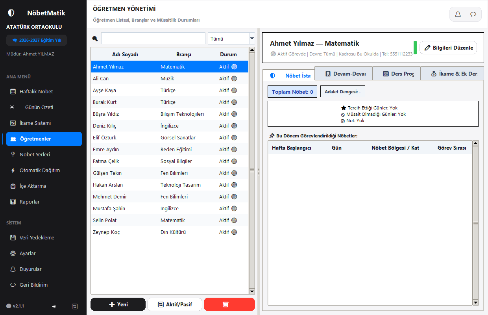
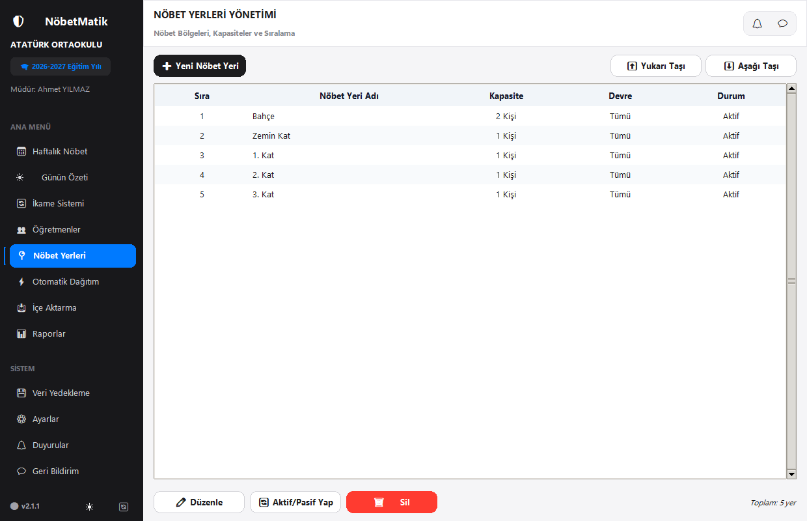
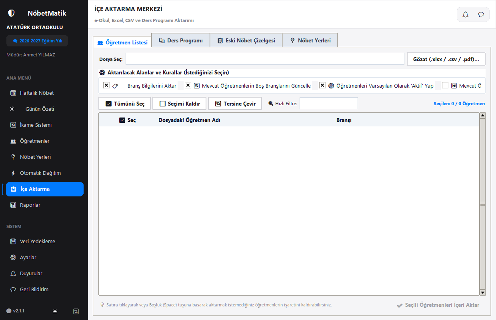
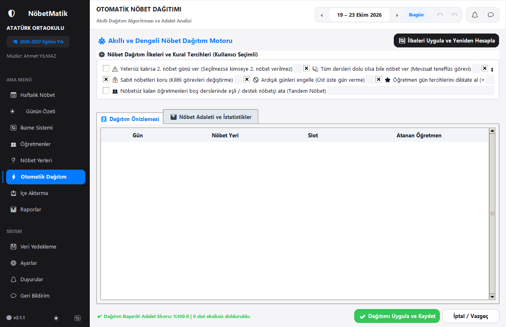
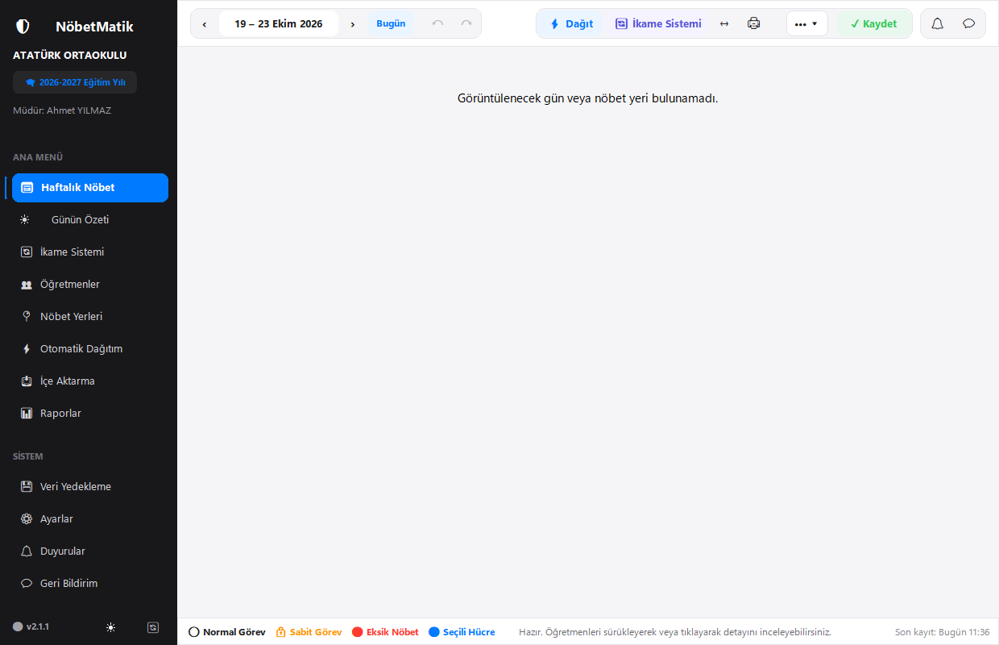
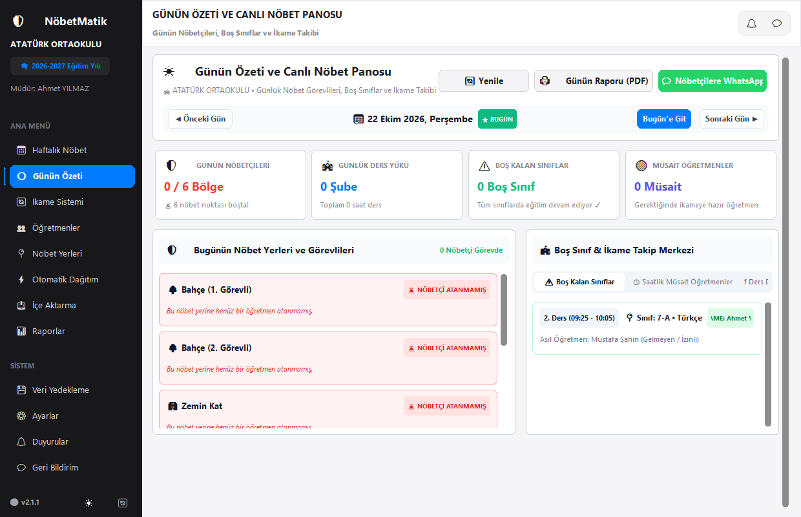
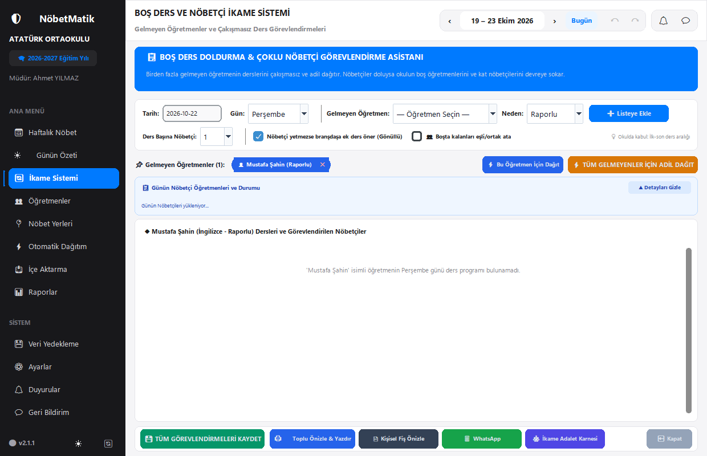
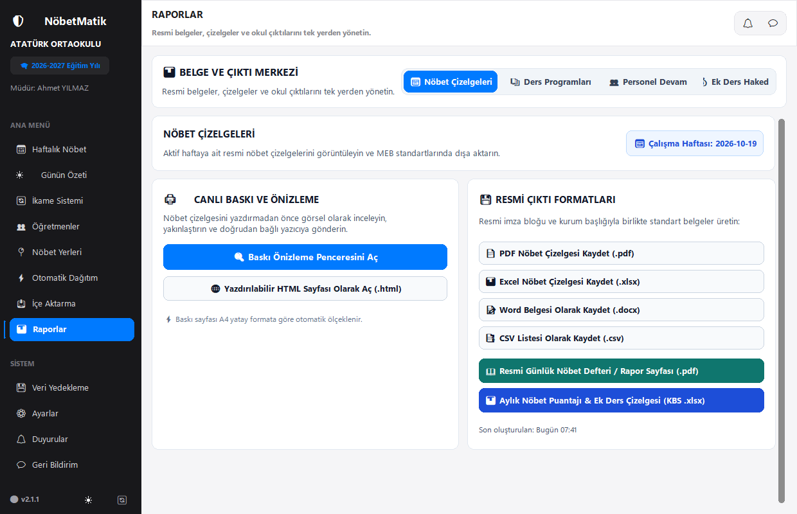
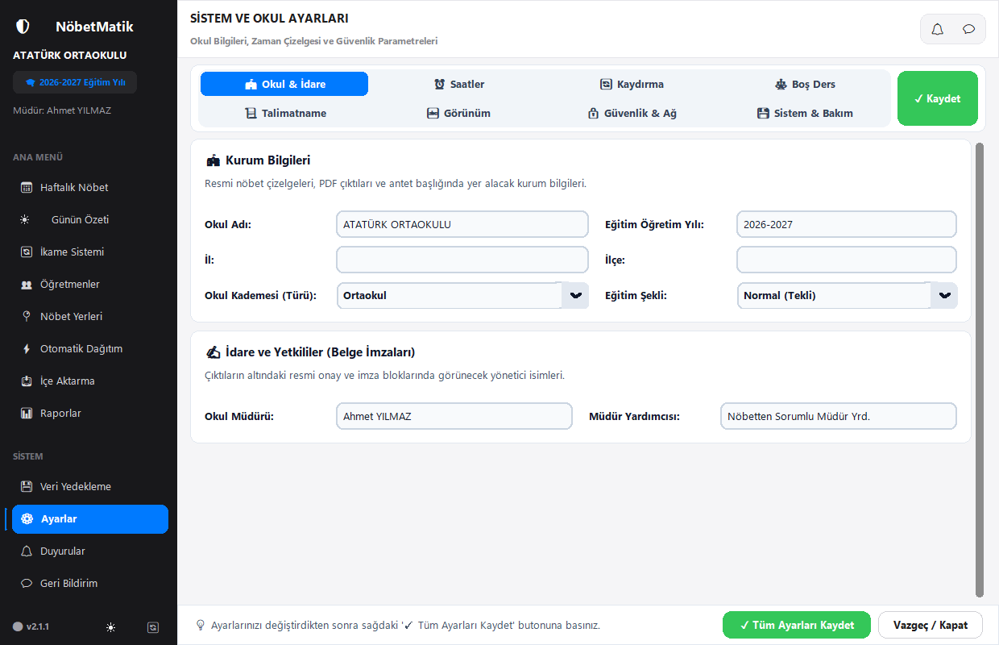

1. Hızlı Başlangıç & Sisteme Genel Bakış
NöbetMatik, okullarda nöbet çizelgelerinin hazırlanmasını, öğretmenlerin boş günlerini, kıdemlerini, gün tercihlerini ve son dakika gelmeyen öğretmenlerin boş kalan sınıflarını tek bir merkezden yöneten modern bir okul yönetim yazılımıdır.
🧭 Sol Gezinti Menüsü (Sidebar)
- 📅 Haftalık Nöbet: Haftanın tüm günleri ve nöbet yerlerinin ana çizelgesi.
- ☀️ Günün Özeti: Bugün görevli nöbetçiler, boş sınıflar ve canlı okul durumu.
- 🔄 İkame Sistemi: Gelmeyen öğretmenlerin yerine nöbetçi ve müsait öğretmen görevlendirme.
- 👥 Öğretmenler: Öğretmen ekleme, branş tanımlama ve nöbet adalet istatistikleri.
- 📍 Nöbet Yerleri: Bahçe, katlar, pansiyon gibi nöbet alanlarının kapasiteleri.
- ⚡ Otomatik Dağıtım: Tek tuşla yapay zeka destekli adil nöbet dağıtımı.
- 📥 İçe Aktarma: e-Okul, aSc Timetables veya Excel dosyalarından ders programı yükleme.
- 📊 Raporlar: İmzalı nöbet defterleri, aylık puantajlar ve resmi çıktılar.
- 📖 Kullanım Kılavuzu: İhtiyacınız olduğunda anında açabileceğiniz resimli rehber.
- ⚙️ Ayarlar: Okul bilgileri, zil saatleri ve güvenli veritabanı yedekleri.
2. Öğretmenler ve Branşların Yönetimi
Nöbet dağıtımından önce okuldaki tüm öğretmenlerin sisteme tanımlanması gerekir.

Nasıl Kullanılır?
- Sol menüden 👥 Öğretmenler sekmesine tıklayın.
- Sağ üstteki yeşil ➕ Yeni Öğretmen Ekle butonuna basın.
- Açılan pencerede Ad Soyad, Branş, Telefon Numarası ve Kıdem Yılını girin.
- Nöbet muafiyeti olan öğretmenler için 'Nöbet Muaf' seçeneğini işaretleyin.
- Kaydet butonuna basarak tamamlayın.
3. Nöbet Yerleri ve Bölgelerin Belirlenmesi
Okul binasındaki görev yerleri (Bahçe, 1. Kat, 2. Kat, Zemin Kat vb.) bu ekrandan yönetilir.

Nasıl Kullanılır?
- Yeni Nöbet Yeri Ekle: Okulunuzdaki her alan için bölge adı girin.
- Kapasite Belirleme: Bahçe gibi geniş alanlara 2 öğretmen, normal katlara 1 öğretmen atayın.
- Sıralama: Tablonun resmi evrakta hangi sırayla basılacağını yukarı/aşağı oklarıyla düzenleyin.
4. Ders Programı & Veri İçe Aktarma (e-Okul / aSc)
e-Okul'dan aldığınız resmi haftalık ders programı PDF'sini saniyeler içinde okur.

Yükleme Adımları:
- e-Okul Kurum İşlemleri'nden Haftalık Ders Programı PDF raporunu bilgisayarınıza indirin.
- NöbetMatik'te 📥 İçe Aktarma sekmesine gelip dosyayı seçin.
- Önizleme tablosunda öğretmenleri ve ders saatlerini kontrol edin.
- 'Veritabanına Aktar' butonuna basın. Okulun tüm haftalık ders haritası hazırlanmış olur.
5. Akıllı Otomatik Nöbet Dağıtımı
MEB mevzuatına uygun şekilde öğretmenlerin boş günlerini, ders saatlerini ve adalet dengesini otomatik analiz eder.

Dağıtım Kuralları ve Tercihler:
- Dersi Olmayan Günlere Nöbet Verme: Öğretmenin okulda bulunmadığı boş gününe nöbet yazmaz.
- Ardışık Günleri Engelle: Bir öğretmene peş peşe günlerde nöbet verilmesini engeller.
- Rotasyon Yap: Önceki haftanın nöbet yerlerini dikkate alarak yerleri eşit dağıtır.
- Kilitli / Sabit Nöbetleri Koru: Daha önce elle sabitlediğiniz hücrelere kesinlikle dokunmaz.
6. Haftalık Nöbet Çizelgesi & Canlı Takip Paneli
Uygulamanın ana kumanda merkezidir. Haftanın günleri ve nöbet bölgeleri etkileşimli bir tabloda sunulur.

Öne Çıkan Özellikler:
- Aktif Gün Vurgusu (Açık Neon Yeşil): İçinde bulunduğunuz gün, göz yormayan özel transparan yeşil tonla otomatik parlar.
- Tıkla - Değiştir / Sabitle: Bir hücreye tıklayarak başka bir nöbetçi seçebilir veya sağ tıklayıp sabitleyebilirsiniz (🔒).
- ↶ Geri Al / İleri Al: Yaptığınız herhangi bir hatalı işlemi anında geri alabilirsiniz.
7. Günün Özeti & Canlı Nöbetçi Takip Panosu
Nöbetçi müdür yardımcıları ve okul idaresi için özel olarak tasarlanmış canlı günlük kontrol merkezidir.

Bu Ekranda Neler Yapabilirsiniz?
- Günün Nöbetçileri: Hangi öğretmenin hangi katta görevli olduğunu, branşını ve o günkü boş ders saatlerini görün.
- Boş Sınıflar & İkame: Raporlu/izinli öğretmenlerin derslerini ve görevlendirilen nöbetçileri canlı takip edin.
- Müsait Öğretmenler: Beklenmedik bir acil durumda o ders saati boş olan öğretmenleri listeleyin.
- 📄 PDF Olarak Kaydet: Günün nöbet özetini resmi A4 formatında tek tıkla imzaya hazır PDF olarak kaydedin.
- 💬 WhatsApp Bildirimi: Nöbetçi öğretmenlere görev yerlerini WhatsApp üzerinden tek tek veya toplu gönderin.
8. Boş Ders Doldurma & Nöbetçi İkame Asistanı
Okula gelemeyen öğretmenlerin sınıflarının boş kalmaması için geliştirilmiş akıllı görevlendirme modülüdür. Artık ana pencere içinde tam sayfa olarak çalışır.

Adım Adım İkame İşlemi:
- Gelmeyen öğretmeni seçip ➕ Listeye Ekle butonuna basın.
- Sistem öğretmenin o günkü tüm ders saatlerini ve sınıflarını listeler.
- O saatte boş olan nöbetçi öğretmenleri otomatik önerir.
- 💾 TÜM GÖREVLENDİRMELERİ KAYDET butonuna basarak hem veritabanını güncelleyin hem de resmi ikame fişlerini oluşturun.
9. Raporlar, Resmi Çıktılar & Nöbet Defterleri
Okul müdürlüğü onayı ve denetimler için gereken tüm resmi evraklar tek ekrandan üretilir.

- Haftalık Nöbet Çizelgesi (PDF / Excel / HTML / Word): Panolara asılacak resmi imzalı çizelge.
- Resmi Nöbet Defteri Sayfaları: İdareye teslim edilen günlük imza ve olay takip föyü.
- Aylık KBS Nöbet Puantajı: Ek ders modülüne hatasız aktarım için resmi aylık Excel cetveli.
10. Sistem Ayarları, Güvenlik & Veri Yedekleme
Okul parametreleri, zil saatleri ve güvenli veritabanı yedekleri bu ekrandan yönetilir.

- Okul Bilgileri: Resmi evrakta çıkacak okul adı, müdür adı ve öğretim yılını düzenleyin.
- Zil Saatleri: Ders giriş ve çıkış saatlerini okulunuzun saatlerine göre ayarlayın.
- Otomatik Yedekleme: Her işlemde güvenli veritabanı yedeği alınır. Bilgisayar değişse bile 'Yedekten Geri Yükle' ile kaldığınız yerden devam edersiniz.
11. Sıkça Sorulan Sorular (SSS)
Cevap: Hayır! NöbetMatik v2.2 dahili Windows TrueType Unicode motoru kullanır; 'Ş, İ, Ğ, Ç, Ö, Ü' karakterleri resmi yazışma kalitesinde kusursuz basılır.
Cevap: Üst çubuktaki '↶ Geri Al' butonuna tıklayarak veya sol menüden '💾 Veri Yedekleme' sekmesine geçip önceki yedeği seçerek saniyeler içinde geri dönebilirsiniz.
Cevap: '👥 Öğretmenler' sekmesinden öğretmeni açın, 'Müsait Olmayan Günler'den o günü işaretleyin. Otomatik dağıtım o güne asla nöbet yazmayacaktır.